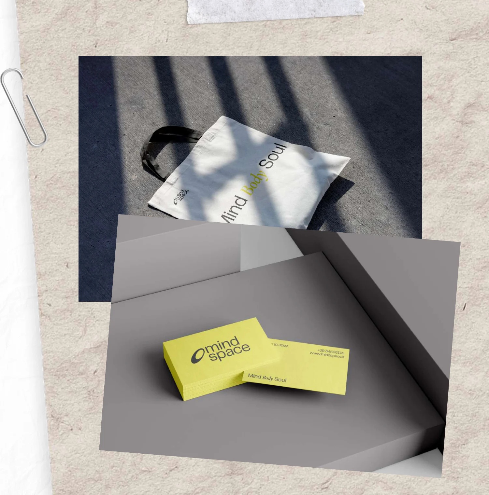
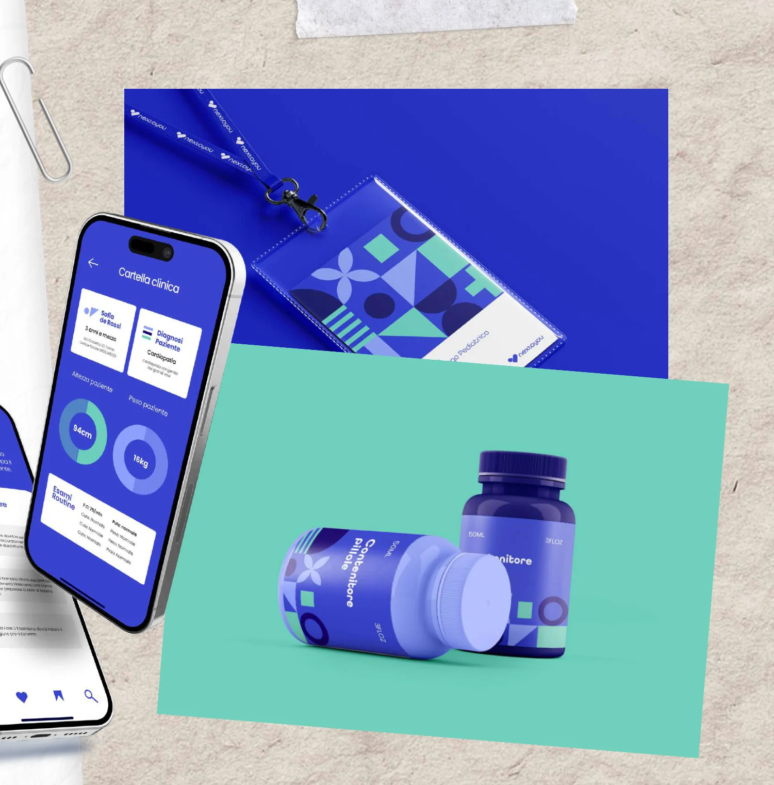
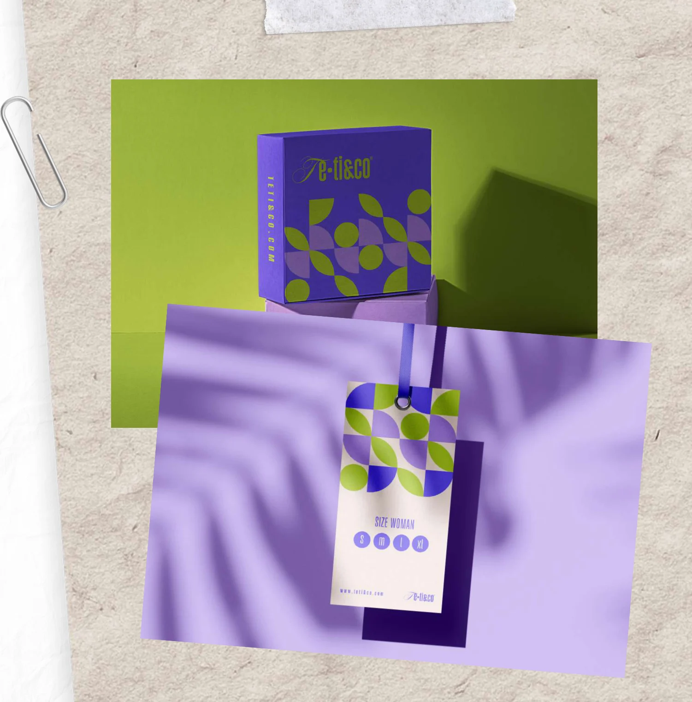
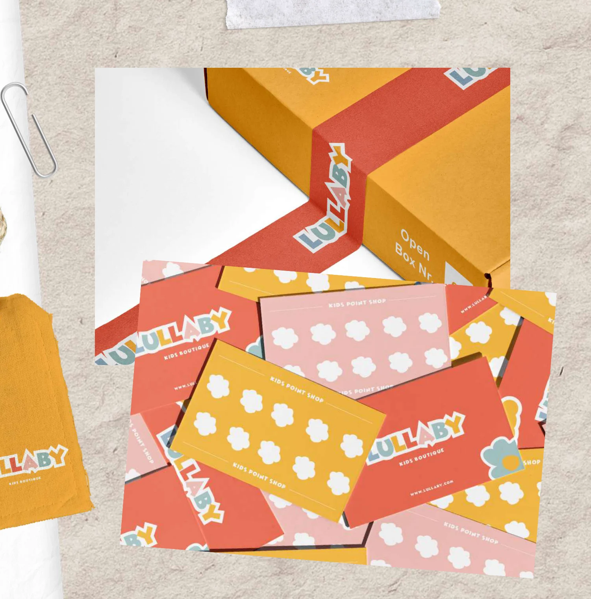
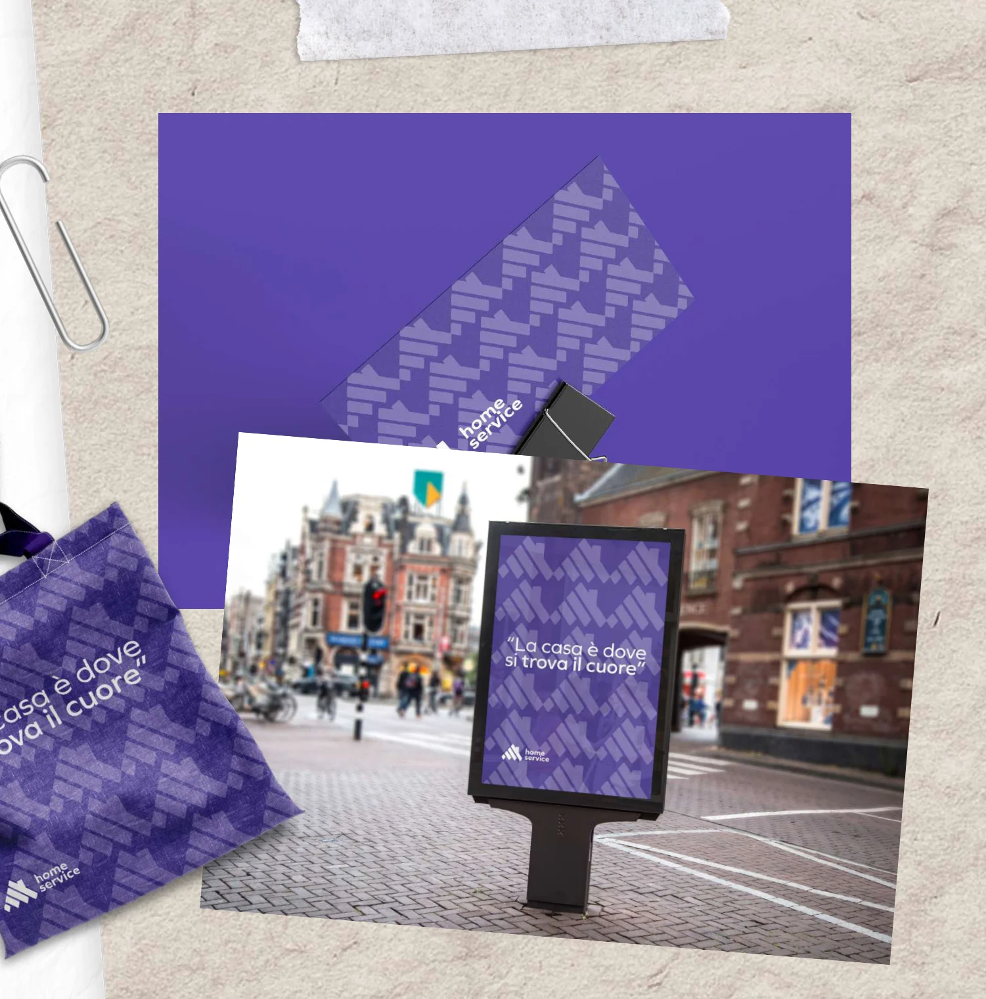
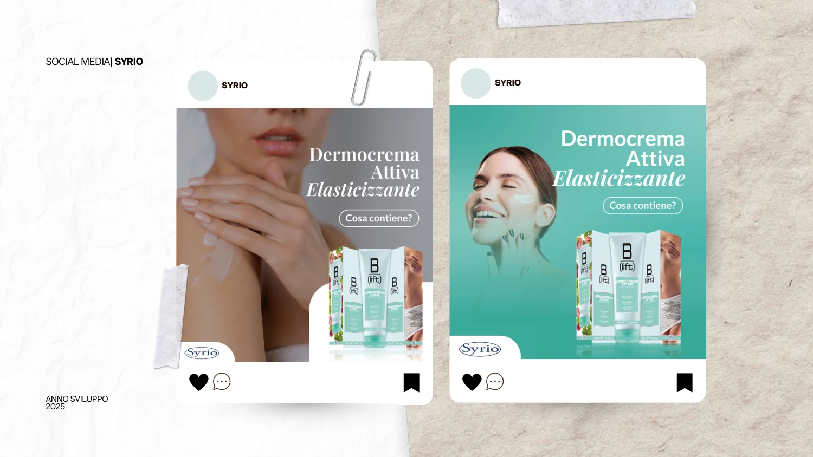
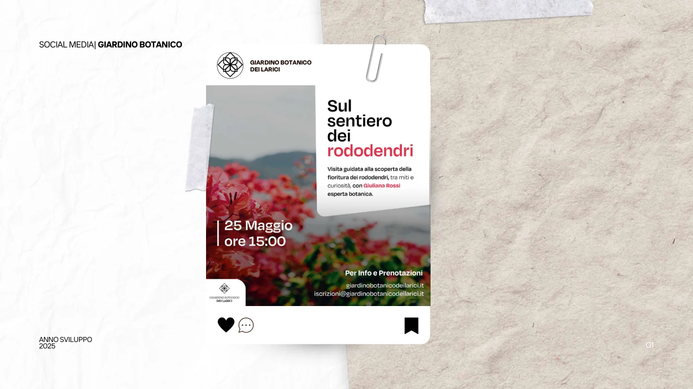
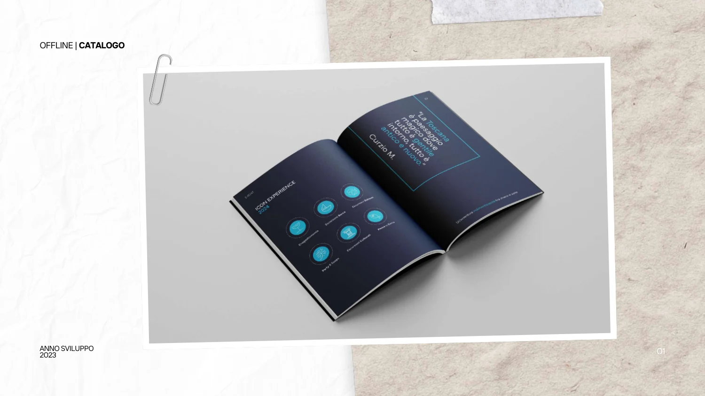

Mindspace
Un’identità visiva per un progetto dedicato alla meditazione e al relax negli spazi urbani.
Sono Vittoria Baldoni. Progetto identità visive e contenuti digitali, mettendo in relazione estetica, coerenza e facilità d’uso.
Esplora i lavoriIdentità visive, esperienze digitali e progetti di comunicazione. Una selezione dal mio portfolio 2023–2025.

Un’identità visiva per un progetto dedicato alla meditazione e al relax negli spazi urbani.

Un progetto di service design dedicato all’esperienza di visita e day hospital presso l’Ospedale Regina Margherita.

Un progetto di identità visiva per un brand di moda mare attento all’eco-responsabilità.

Un’identità visiva legata al mondo dell’infanzia.

Una piattaforma di mutuo aiuto gratuito tra vicini di casa.

Una selezione di materiali di comunicazione per Syrio, presentata nel portfolio.

Una serie di applicazioni di comunicazione per il Giardino Botanico dei Larici.

Un progetto di catalogo presentato nella sezione Offline del portfolio.
Sono una Digital Graphic Designer con una formazione in Multimedia Design. Mi occupo di identità visiva, interfacce web, materiali editoriali e contenuti per la comunicazione digitale.
Il mio percorso unisce studi di progettazione e lavoro nei team marketing: dal logo alla landing page, dai materiali stampati ai contenuti social.
Scarica il curriculumLogo design, branding e rebranding. Sistemi grafici coerenti nei diversi punti di contatto.
Web design, UX/UI, layout di siti e landing page.
Campagne marketing, social media, DEM, impaginazione e montaggio video.
Graphic Designer & Communication Specialist
Contenuti grafici per marketing e comunicazione interna, supporto al rebranding del sito interno e percorso Microsoft 365 Copilot Adoption.
Graphic Designer
Campagne marketing e DEM, layout web e landing page, montaggio video per Remail, Bagni Italiani, Zucchetti Poltrone e Ariel Energia.
Graphic Designer · Tirocinio
Social media, materiali promozionali, video editing e identità visiva.
Tirocinio e stage universitario in brand identity, logo design, impaginazione e social media.
Laurea magistrale · ISIA Pescara Design
2023 · 110 e lode
Laurea triennale · Università Gabriele D’Annunzio
2020 · 102/110
Certificazione di 1° e 2° livello
Luca La Mesa Academy · 2024